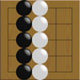
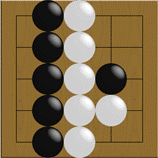
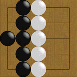
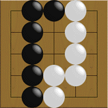

Aqui você aprenderá quando um jogo está para acabar e como contar território usando tabuleiros de 5x5.
Ambos os lados fizeram 5 movimentos cada e o jogo é considerado acabado. Pretas têm 5 pontos à esquerda e as brancas têm 10 pontos à direita.
Portanto brancas ganharam 5 pontos.
Você conta os lugares como territórios onde as linhas verticais e as horizontais se cruzam. Os cantos e os limites do tabuleiro também são incluídos. Lembre-se que as pedras não são contadas como território.
Um jogo é considerado estar acabado quando ambos os lados passam, pois eles não querem fazer mais movimentos.
Por que a figura acima é considerada um jogo terminado? Continuando o jogo, assuma que as pretas fizeram um movimento dentro do território das brancas.
As brancas podem facilemente capturar a invasora. Veja a figura acima.
Portanto as pretas não fariam tal movimento.
Agora, o que acontece se você fizer um movimento dentro do seu próprio território?
Com esse movimento você reduziria o seu território de 1 ponto. Ninguém quer fazer isso!
Portanto, a primeira figura dessa página é considerada como fim do jogo. (Embora algumas vezes você tenha que jogar dentro do seu próprio território para fazer dois olhos ou para fortalecer seus limites.)
Esse também é o fim de um jogo.
Pretas têm 5 pontos e Brancas têm 6 pontos - brancas ganharam por 1 ponto.
E esses 2 pontos no centro? Eles são chamados "Dame" - área neutra - a qual não pertence a nenhum lado.
Você pode jogar aqui se você quiser, embora você não perderá nem ganhará nenhum ponto.
 Próximo
Conteúdo
Próximo
Conteúdo